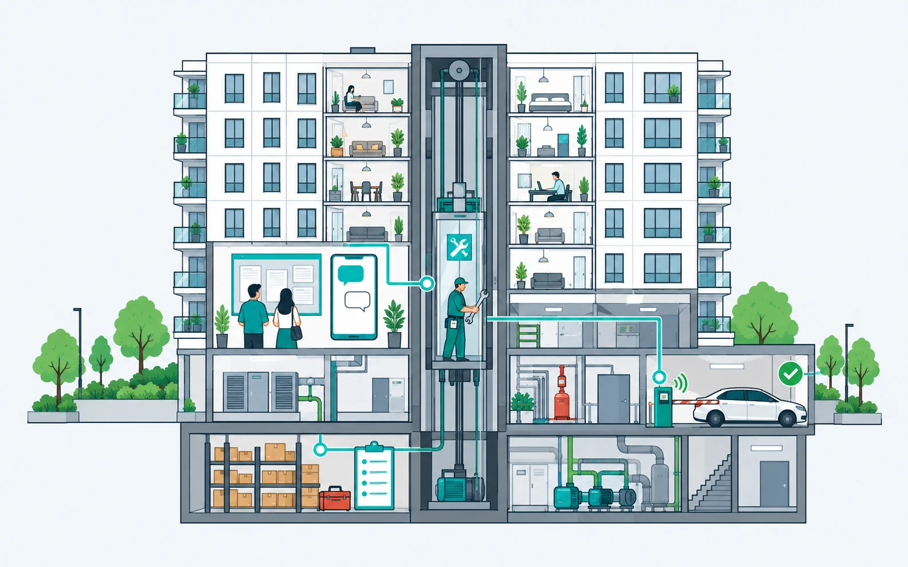

Обращения жителей
Описание проблемы, адрес и материалы обращения помогают диспетчеру понять, что произошло и где нужна помощь.
Житель сообщает о проблеме. Диспетчер назначает исполнителя. Инженер фиксирует результат, а ответственный проверяет работу. Весь путь заявки — в одной сервисной панели.

Панель помогает организовать обслуживание дома: от регистрации обращения до проверки выполненных работ.
Описание проблемы, адрес и материалы обращения помогают диспетчеру понять, что произошло и где нужна помощь.
Диспетчер уточняет задачу, задаёт приоритет и назначает ответственного. Заявки остаются в общем рабочем списке.
Исполнитель видит назначенные задачи и место работ, обновляет статус и фиксирует выполненные действия.
Фотоотчёт дополняет результат работ. Ответственный проверяет выполнение и принимает работу либо возвращает на доработку.
Привязка обращений к домам и помещениям сохраняет контекст объекта и помогает находить связанные задачи.
Жителю, диспетчеру, инженеру и руководителю нужны разные действия. Состав ролей и доступ к объектам настраиваются при запуске.
Например, житель сообщает о воде в подъезде. Решение о выезде и способе ремонта принимает команда УК.
Зарегистрировать обращение, уточнить адрес и обстоятельства. При необходимости связаться с жителем.
Определить приоритет, исполнителя и срок. Передать инженеру описание и приложенные материалы.
Проверить объект, устранить причину и описать результат. Добавить фотографии выполненных работ.
Сопоставить результат с задачей. Принять работу или вернуть её на доработку с комментарием.
Выберите дом, команду и тип обращений. На пилоте проверьте весь путь заявки на понятном команде примере.
Список домов и помещений, участники команды, ответственные за диспетчеризацию и приёмку.
Какие обращения принимаем, как определяем приоритет и срок, что считаем достаточным фотоотчётом.
Пройти регистрацию, назначение, выполнение и приёмку. Уточнить роли и процесс до расширения на другие дома.
Расскажите, как сейчас принимаете обращения и кто отвечает за работы.
Показания датчиков, состояния оборудования и события объекта.
Подробнее о мониторингеДавление, насос и аварийные сигналы на карте объекта.
Подробнее о фонтанах